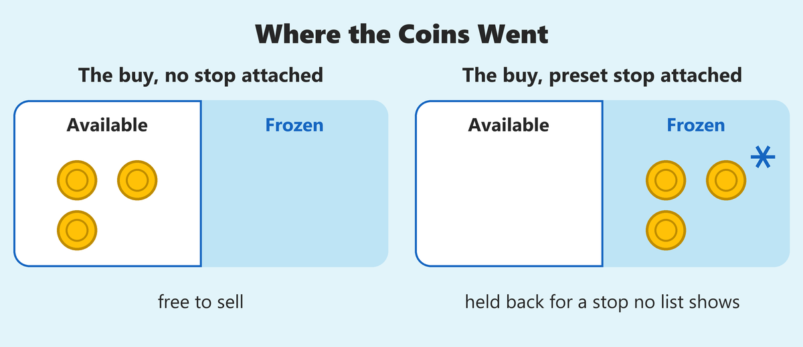
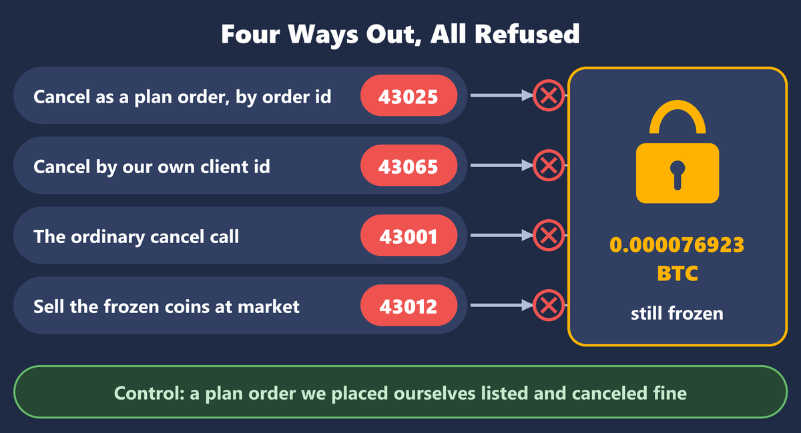
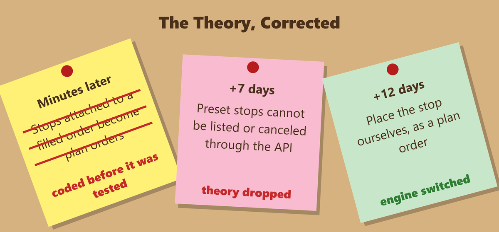
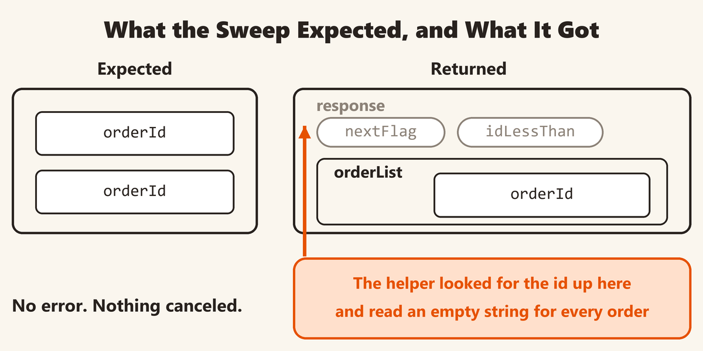

Hawaii's alert system could send a missile warning but had no procedure to retract one. Our Bitget spot stops had the same shape: placed in one call, then neither listed nor canceled.
On January 13, 2018, Hawaii sent a ballistic missile alert to phones across the state. The FCC found that the agency's checklist lacked any protocol for correcting a false alert, and the correction took 38 minutes.
Ours was smaller: the spot orders of our previous engine, on Bitget. One call could attach a stop-loss to an order. We ran it again on a demo account for this post, and the stop never showed up in any order list, every cancel call was refused, and the coins it held stayed frozen.
A Hawaii attack warning siren on Oahu. The alerting side of the system existed. The retracting side did not. Photo: Anthony Quintano from Honolulu, HI, United States, CC BY 2.0, via Wikimedia Commons.

Before an order API goes live there is a four-step test: place an order with its stop, list it, cancel it, and check that the balance comes back. We learned those four steps one failure at a time, and this post follows them in order.
1. Place
On Bitget, a stop was too easy to place. Its order call takes two optional fields, a preset take-profit price and a preset stop-loss price, so a stop can ride along with the order in a single request. It is one call and it is convenient. On spot, our engine used it for every order that needed protection.
The side effect showed up in the balance. When a stop was attached, the quantity it protected moved from available, free to sell, to frozen, held back for the stop. That mattered because our engine rebalances on a schedule, resetting its holdings to target weights, and needs those coins free. Before it computes the next orders it cancels whatever is still standing, and a frozen coin can't be sold.

2. List
The engine's first attempt went through the ordinary order API. To find the stop it asked for the unfilled orders, and Bitget refused with code 40913, because that call required an order id we did not have. The coins stayed frozen.
For this post we ran the old call again on Bitget's demo account: a market buy of about 6 USDT of BTC with a preset stop-loss at 80% of the price. The response returned one order id, the buy's, and none for the stop. Three seconds later the whole purchase, 0.000076923 BTC after the fee, sat in the frozen column and none of it in the available one.
Both order lists were empty. The plan-order list returned no orders, and so did the list of open orders, with or without the stop-and-take-profit filter.
3. Cancel
Every way out we tried on the demo account was refused:
- Cancel as a plan order, by order id: code 43025, plan order does not exist.
- Cancel by our own client id: code 43065, order does not exist.
- The ordinary cancel call: code 43001, the same.
- A market sell of the frozen quantity: code 43012, insufficient balance.

We had a theory. Bitget keeps conditional orders, the ones that wait for a trigger price, in a separate system called plan orders, and we understood that a stop attached to a filled order becomes one of them. If that held, the plan-order endpoints should list it and cancel it.
Our fix was to move the cancel to the plan-order system. Seven minutes after that change went into the engine, we added the matching endpoints to the adapter: list the active plan orders, cancel one. The theory was cheap to act on, and it was written into code before anyone had tested the case that mattered.
Seven days later the theory had changed. The commit message that adds the next endpoint says it plainly: orders created with the preset fields cannot be queried or canceled through the API, so the frozen balance cannot be released, and a plan order can be.

The control behaved as described. A plan order we placed ourselves was accepted, showed up in the list as live, and canceled with a success response. Placing it did not change the frozen balance, and neither did canceling it.
One more variation, a stop closer to the price. We found no mention of this limit in Bitget's documentation, so what follows is what the API actually returned, not a documented rule. A stop placed above the order price is refused outright, with code 40808. With the stop as little as 0.005 percent below the market (69,014.5 against 69,017.94), the coins stayed frozen through two five-minute watches, and none of the calls we tried could see or cancel it. In those two watches the price never came down to the stop. A later run closed that gap: with a stop 0.1 below the fill price, BTC dipped through two of the stops we had left standing, two market sells with source SYS filled in the same second, and the frozen balance came back. The hidden stop was live and it fired. We just had no way to see or cancel it, so the only way out we found for coins frozen by a preset stop was the price reaching it. All of these runs were on a demo account, and we have not repeated them on a live one. That settled the rule the engine followed for as long as it placed stops: it only trusts a stop it can list and cancel.
4. Check
That sliver of BTC was still frozen on the demo account nine days later, the same trap the engine was in. Checking the balance after a cancel is the step that tells you whether the first three worked.
The one-call version could place a stop that none of the calls we tried could list or cancel, so the fix was to give up the one call. We stopped using the preset fields. Five days later, twelve days after the first failed attempt, the engine switched. That was the day we added the endpoint that changes a plan order's trigger price and size without canceling it. From then on the engine placed the stop as a plan order in a second request, so that it existed as something the API could list, change and cancel, and every protected order became two calls: the order, then its stop.
Two calls meant two phases. The engine first sent every order of the cycle, then set stops only for the symbols that had filled. After a buy it checked up to six times, half a second apart, for the exchange to show the coins as held, because a stop's size is the held quantity, and only then placed the stop. A position had no stop between its fill and its stop going in, by design, and that stretch included the wait. If a stop failed to go in, the engine logged the error and the position stayed without one. Nothing retried it on its own. We ran that on the demo account with a stop too small for the exchange's 1 USDT minimum: one placement call, error 43027, the symbol marked failed, and nothing on the exchange. If changing an existing stop failed, the engine fell back to placing a new one. We handed the change an id the exchange did not know (error 40054), the engine placed a new stop, and two stops stood on the exchange, the old one still live, until a sweep cancelled both in 1.9 seconds.
We measured that stretch for this post. On the demo account we ran the adapter's real code: a market buy of 6 USDT of BTC, then the stop placed as a plan order sized to the coins that had shown up as available. Over ten runs, the exchange's own timestamps put the stop between 204 and 1,391 milliseconds after the fill, 243 at the median. The coins showed as available after 218 to 1,304 milliseconds, 232 at the median, so in all ten runs the engine's six checks would have been enough. We polled every 50 milliseconds. The engine's checks were half a second apart, so its own stretch ran longer than ours by up to half a second.
The ids were what made the difference. Placing a plan order returns an order id, and the engine stored it so it could change or cancel that stop at the next rebalance, until the sweep described below took over that job in May. A preset stop gave us no id to keep: when we re-ran it, the response held only the buy's id.
Our own cleanup needed the same check against a real response, and for a while it had never had one. The cancel path became a helper. On account termination and in the cleanup of orphaned sessions, the ones left behind when their engine job is gone, it lists every active plan order and cancels them one at a time. If one cancel fails it logs the failure and moves on. That was deliberate: one stuck order should not block a rebalance.
In late May we found plan orders still standing on the exchange after accounts had been terminated, and traced it to a helper that had been canceling nothing. The API returns an object with paging cursors and a list of orders inside it. The helper read the order id from a flat structure, got an empty string for every order, and skipped all of them. Plan orders stayed on the exchange after the account was shut down. We did not record how many orders it left standing or for how long. That bug is the reason every sweep now starts from a real response.
what the helper expected: [ {"orderId": ...}, {"orderId": ...} ]
what the API returned: {"nextFlag": false, "idLessThan": "", "orderList": [ {"orderId": ...} ]}
Nothing complained, because the helper was built not to. The tests had passed for the same reason: they fed the helper the flat shape we had assumed, so they agreed with the bug. The fix was checked against a real call to the demo API, which answered with the cursor fields and an empty list of orders: it confirmed the shape but held no order to read an id from. For this post we ran the sweep against orders that existed: on the demo account we placed three plan orders, listed all three, and one sweep cancelled 3 of 3 in 0.89 seconds, left none listed, and changed neither the available nor the frozen balance. The tests were rewritten around that shape, with cases for paging, a repeated id, an empty list and a missing id, and every mocked call was bound to the real function signature.
The sweep now reads the real response shape, pages through up to fifty pages of plan orders, skips ids it has already seen, and waits a tenth of a second between cancels to stay inside the exchange's rate limit. We also made it run at the start of every rebalance, which we did the day we fixed it.
Where It Stands
The stop code itself is gone from spot. In August we deleted it, because the multi-alpha engine from the post on one number and dozens of strategies, which runs many strategies together, has no per-alpha stop-loss to attach. Loss is limited another way now. Each portfolio and each alpha can carry a drawdown stop that drops its allocation to zero when its drawdown passes the threshold we set, so the protection lives in our books instead of in an order on the exchange. A stop order per alpha is still on our backlog. What stayed from the old code is more useful than the code. The sweep still runs at the start of every rebalance as a guard against leftovers from outside the engine or from the older one. And the shape this episode gave us, place, list, modify and cancel, lives on in our unified trigger API, the one interface for conditional orders that both Bitget and Binance sit behind. The adapter in front of Binance translates that shape into Binance stop orders. We ran the four steps through it on Binance's demo spot account: the stop came back with an id and showed in the list, a change replaced it and the old id disappeared, and canceling it moved 0.00032 BTC from locked back to free.
What an API lets you place is half the feature. The other half is whether it lets you list and cancel what you placed, and whether the balance comes back when you do. Hawaii's alert had no way back, and our stops had none until we built that second half, twice: once to cancel the stops, and once to make the canceling work.
Sources
- Federal Communications Commission, Public Safety and Homeland Security Bureau (2018). "Report and Recommendations: Hawaii Emergency Management Agency, January 13, 2018 False Alert" (no protocol for correcting a false alert, p. 16; 38 minutes to correct, pp. 3-4). Link
- Bitget. "Place Plan Order," Spot Trigger API documentation, classic account (the separate plan order our engine places; the Spot Trigger category covers placing, modifying, canceling and querying trigger orders). Link